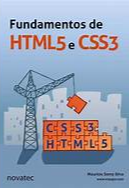
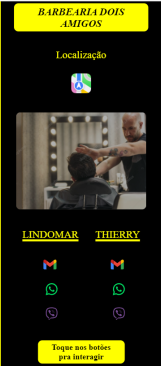

Livros lidos
JavaScript
O guia definitivo
Comprar o livro
O livro trás um grande aprofundamento da linguagem javascript.
Expressa as caracteristicas da sintaxe, semântica, tipos de dados,
métodos e classes que podem ser utilizados pela linguagem.
O livro esta dividio em capítulos dispostos de modo que o ensino
possa ser visto e aplicado gradativamento.
Com
Fundamentos do HTML e CSS
Comprar o livro
O livro trata de estruturas de marcação e estilização
com as liguagens html e css.
Há módulos que são voltados para a prática do conteúdo.
Um grande auxílio junto às aulas de progração.
Código limpo
Habilidades Práticas do Àgile Software
Comprar o livro
O livro trata de refatoração do código,
tem a finalidade de ensinar o desenvolvedor de códigos
há constuir, pensando não apenas no exterior, mas também no
interior do software. Há módulos que são voltados para a pratica do conteúdo.
Projetos
Card Barbearia
Card-Barbearia
Nesse pequeno projeto inicial, tive a oportunidade
de apresentar uns poucos detalhes do apredizado com programação.
Uso uma estilização simples, com um background, imagens
com filtro, tags link
que levam o usuário a um contato direto
com o cliente.
O card esta no formato resposivo, o que lhe permite
a adequação tanto um uma tela com formato web ou mobile.